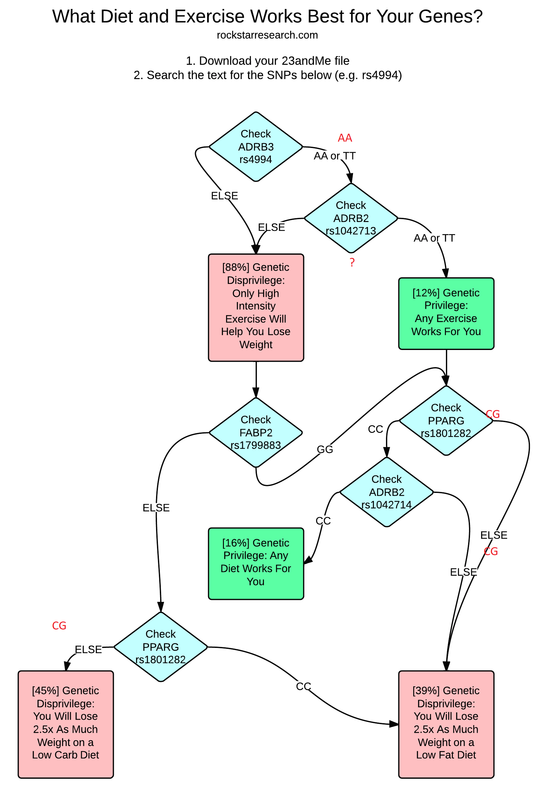
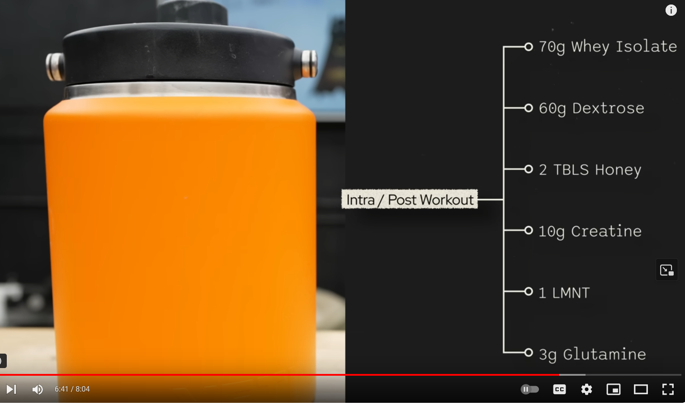

Module 37: Longevity Culinary Engine — Restorative Broth, Ninja Bullet Smoothie, Bulk Moist-Heat Proteins, RS3 Starch Triad, Phytochemicals & Kitchen Infrastructure
1. The Nutritional Longevity Philosophy: Precision Fueling & Substrate Shunting
The Version 5.0 architecture decouples nutritional delivery into targeted biochemical vehicles. Rather than haphazardly mixing compounds or consuming unpalatable raw powders in water, the protocol integrates specific functional food matrices designed to maximize pharmacokinetics, prevent metabolic interference (e.g., the Randle cycle), minimize Advanced Glycation End-products (AGEs), and achieve effortless daily adherence:
- The Connective Tissue & Tendon Loading Window: Hydrolyzed collagen paired with liposomal vitamin C and high-molecular-weight hyaluronic acid in a warm savory broth matrix to optimize prolyl and lysyl hydroxylase activity prior to mechanical loading.
- The Nocturnal Proteostasis & Satiety Vehicle: A rapid 60-second collagen/casein microwave mugcake delivering continuous nighttime glycine and amino acids for tissue remodeling without glycemic disruption.
- The Ninja Bullet Daily Habit & Hydration Engine ("One Smoothie Per Day"): A strictly carbohydrate-only, fat-free wild blueberry and lemon base engineered to transport high-dose bioactive powders (chondroitin, amla, taurine, glycine, super-greens, Agaricus blazei, creatine, C3G, TMG) with rapid gastric transit, zero fatty acid competition, and 16–20 oz of morning/midday cellular hydration.
- The Moist-Heat Protein Batching Engine (Instant Pot): Bulk preparation of lean local grass-fed beef and pastured chicken cooked under moist pressure to eliminate AGEs, Heterocyclic Amines (HCAs), and Polycyclic Aromatic Hydrocarbons (PAHs), with 100% jus retention.
- The High-Pressure RS3 Retrogradation Starch Shunt (Rice, Lentils, Potatoes): High-pressure gelatinization followed by a mandatory 24-hour cold recrystallization ($4^\circ\text{C}
), transforming digestible carbohydrates into non-digestible butyrogenic fuel for colonic commensals (Faecalibacterium prausnitzii). - Phytochemical Optimization & Enzyme Restoration (Lustgarten Biomarker Protocol): High total fiber (60–100g+ daily), mushroom L-ergothioneine preservation (Protocol A Duxelles), sulforaphane restoration via brown mustard seed myrosinase (Protocol B), and low-oxalate high-density greens compression (Protocol C).
- The Nocturnal Acid-Base & Slow-Wave Sleep Vehicle: A rapid warm sodium bicarbonate (5g) + GlyNAC (Glycine + NAC) + myo-inositol aqueous cocktail to buffer renal ammoniagenesis, prevent nocturnal metabolic acidosis, and deepen N3 restorative slow-wave sleep.
2. Essential Kitchen Arsenal & Longevity Infrastructure
To achieve radical time savings and enable frictionless delegation (personal batching or an in-home meal-prep cook), the longevity kitchen is standardized around eight specialized tools and five high-yield pantry consumables:
┌─────────────────────────────────────────────────────────────────────────────────────────┐
│ ESSENTIAL LONGEVITY HARDWARE │
├───────────────────────────────┬─────────────────────────────────────────────────────────┤
│ Tool │ Primary Biophysical / Culinary Function │
├───────────────────────────────┼─────────────────────────────────────────────────────────┤
│ 1. Ninja Bullet / Personal │ Daily non-negotiable smoothie habit & hydration engine; │
│ High-Speed Blender │ dry-pulsing mushroom duxelles without liquid shearing. │
├───────────────────────────────┼─────────────────────────────────────────────────────────┤
│ 2. Instant Pot (6-Qt / 8-Qt) │ Low-temperature moist pressure cooking for proteins; │
│ (Duo or Pro) │ eliminates AGEs/HCAs; high-efficiency starch cooking. │
├───────────────────────────────┼─────────────────────────────────────────────────────────┤
│ 3. Dedicated Rice Cooker │ Fuzzy-logic automated starch gelatinization; precise │
│ or Second Instant Pot │ water absorption for bulk resistant starch batches. │
├───────────────────────────────┼─────────────────────────────────────────────────────────┤
│ 4. Bulk High-Speed Peeler │ Fast peeling of 5–10 lbs of potatoes in minutes to peel │
│ (Rotary Crank or Swiss Y) │ away glycoalkaloids (solanine) when preparing RS3 cubes.│
├───────────────────────────────┼─────────────────────────────────────────────────────────┤
│ 5. Stainless Steamer Basket │ Elevates whole/cubed potatoes above boiling water in IP │
│ │ to prevent waterlogging and mineral leaching. │
├───────────────────────────────┼─────────────────────────────────────────────────────────┤
│ 6. Digital Precision Scale │ 0.1 g resolution for Sunday 7-jar smoothie pre-batching │
│ │ and exact protein/carbohydrate macro verification. │
├───────────────────────────────┼─────────────────────────────────────────────────────────┤
│ 7. Airtight Glass Pyrex / │ 4-cup to 11-cup rectangular glass vessels; eliminates │
│ Snapware Containers │ BPA/phthalate leaching into warm foods; color-coded lids│
├───────────────────────────────┼─────────────────────────────────────────────────────────┤
│ 8. Fine-Mesh Strainer / Tray │ Rapid steam off-gassing of cooked starches before 4°C │
│ │ refrigeration to ensure uniform amylose retrogradation. │
└───────────────────────────────┴─────────────────────────────────────────────────────────┘
Essential Longevity Pantry Consumables
- Virgin Coconut Oil: Added (1–2 tsp) to boiling rice water to form stable amylose-lipid inclusion complexes, boosting resistant starch yields by up to 2.5x to 3x after 24h chilling.
- Ground Brown Mustard Seed Powder (Brassica nigra) or Daikon Powder: Kept in a shaker; supplies active, heat-stable myrosinase to restore sulforaphane conversion on heated/microwaved crucifers.
- High-Polyphenol Extra Virgin Olive Oil (EVOO, >500 mg/kg polyphenols): Cold-pressed; reserved strictly for cold or post-heat drizzling to protect bioactive oleocanthal and hydroxytyrosol against thermal oxidation.
- Raw Organic Apple Cider Vinegar / Fresh Lemons: Acetic and citric acids to blunt postprandial glucose surges and lower aqueous pH for C3G stabilization.
- Unrefined Mineral Salt & Kelp Flakes: Clean sodium, bioavailable potassium, and trace iodine.
3. Recipe 1: Restorative Longevity Broth Drink (Pre-Workout or AM)
Clinical Rationale & Biochemical Mechanism
Tendon, ligament, and articular cartilage tissues are predominantly avascular and rely on passive fluid diffusion during mechanical loading for nutrient transport. Ingesting 15 g of hydrolyzed collagen peptides 30 to 60 minutes prior to tendon loading (or during the morning fasted state) produces an acute peak in circulating plasma glycine, proline, hydroxyproline, and hydroxylysine (Baar et al., Am J Clin Nutr 2017).
Crucially, prolyl 4-hydroxylase and lysyl hydroxylase—the two iron-dependent dioxygenase enzymes responsible for stabilizing the collagen triple helix—strictly require L-Ascorbate (Vitamin C) as an essential single-electron donor to keep active-site iron in the catalytically active \text{Fe}^{2+} state. Ingesting liposomal vitamin C alongside the broth ensures immediate substrate availability at the moment of mechanical strain.
Ingredients & Preparation
- 15 g Hydrolyzed Collagen Peptides (Type I & III, pasture-raised bovine or marine).
- 200–500 mg High-Molecular-Weight Hyaluronic Acid (HMW-HA, >1.5\text{ MDa}
):Soluble linear glycosaminoglycan that acts as the central structural backbone of cartilage proteoglycans, concentrates in the synovial fluid and nucleus pulposus of intervertebral discs, and stimulates endogenous synoviocyte HA synthesis. Synergizes with Chondroitin Sulfate in the cold smoothie. - 12–16 oz Warm Broth Base:
- High-quality commercial or homemade bone/cartilage stock, OR
- 1–2 tsp concentrated savory base (e.g., Better Than Bouillon* Organic Roasted Chicken or Beef base dissolved in hot RO water).
- Electrolyte Salt: 1/4 to 1/2 tsp unrefined mineral salt (Redmond Real Salt or Celtic sea salt) supplying sodium and trace minerals.
- Obligate Co-Factor: 500–1,000 mg Liposomal Vitamin C (taken as liquid or capsule immediately alongside the warm broth drink).
- Gut-Liver IAP Co-Factor: 15–20 mg Zinc Carnosine (acts as an Intestinal Alkaline Phosphatase inducer to dephosphorylate luminal endotoxin/LPS).
- Optional Enhancers: Pinch of ground black pepper, 1/4 tsp turmeric, or a thin slice of fresh ginger.
Instructions
- Heat 12–16 oz of purified RO water to approximately $65\text{--}75^\circ\text{C} ($150\text{--}165^\circ\text{F}
). - Dissolve the bouillon or bone broth concentrate thoroughly with a spoon or handheld milk frother.
- Whisk in the 15 g of hydrolyzed collagen powder and HMW-HA until completely clear and dissolved (collagen peptides and HMW-HA dissolve effortlessly in warm liquids without clumping).
- Consume warm 30–60 minutes prior to training (Phase C) or as a grounding morning ritual (Phase A), taking the liposomal vitamin C concurrently.
4. Recipe 2: Evening Collagen Microwave Cake (Mugcake)
Clinical Rationale & Biochemical Mechanism
Sleep architecture depends heavily on central core body cooling and inhibitory neurotransmission. Humans synthesize only \sim 3\text{ g/day} of glycine endogenously, yet optimal collagen turnover, glutathione synthesis, and SCN NMDA receptor thermolytic cooling demand \ge 12\text{--}15\text{ g/day}. The Evening Collagen Microwave Cake provides a low-calorie, non-glycemic, highly satiating evening vehicle that fulfills nocturnal amino acid requirements without elevating circulating blood glucose or suppressing growth hormone secretagogue pulses.
Ingredients & Exact Specs
- Protein Base:
- 15–20 g Hydrolyzed Collagen Peptides (unflavored or chocolate)
- 10–15 g Micellar Casein or Whole Egg / Egg White (provides structural matrix and sustained amino acid release).
- Non-Glycemic Flour / Binder: 1 tablespoon (approx. 7–10 g) Coconut Flour or Oat Fiber.
- Liquid Matrix: 3–4 tablespoons (approx. 45–60 mL) unsweetened almond milk, macadamia milk, or water.
- Flavor & Epigenetic Compounds:
- 1 tablespoon (5 g) Raw Organic Cacao Powder (high flavanols / epicatechin for endothelial NO).
- 1/2 tsp Ceylon Cinnamon (sensitizes GLUT4 and suppresses nocturnal glucose spikes).
- Splash of pure vanilla extract.
- Sweetener: Pure Stevia, Monk Fruit, or 1–2 tsp Allulose (which suppresses SGLT1 glucose uptake).
- Leavening Agent: 1/4 tsp baking powder.
Instructions
- In a standard ceramic coffee mug or small microwave-safe glass bowl, whisk the dry ingredients together (collagen, casein/egg powder, coconut flour, cacao, cinnamon, baking powder, sweetener).
- Add the liquid (and whole egg/egg white if using fresh egg) and stir vigorously with a small fork until a smooth, thick batter forms (similar to brownie batter).
- Microwave on HIGH for 50 to 70 seconds (depending on microwave wattage). The mugcake will rise rapidly and set into a moist, spongy, cake-like texture. Do not overcook to avoid drying out.
- Consume warm at 20:45–21:15 (Phase D), delivering sustained nocturnal glycine and satiety before applying mouth tape.
5. Recipe 3: Ninja Bullet Daily Habit & Hydration Engine ("One Smoothie Per Day")
I. The Master Nutraceutical Delivery Engine
The daily smoothie is a non-negotiable morning or midday habit. It serves two indispensable physiological roles:
1. The Primary Hydration Engine: Delivers 16–20 oz of pure filtered RO water and electrolyte potassium to jumpstart cellular hydration and glomerular filtration.
2. The Nutraceutical Powder Carrier: Bypasses "pill fatigue" by consolidating 10+ bioactive longevity powders into a single delicious vehicle that takes under 90 seconds to assemble.
*(Optimization Note: Glycine and NAC are consolidated into Recipe 5 Nocturnal Restorative Drink, maximizing overnight glutathione synthesis and preventing any daytime blunting of exercise adaptations).*
The matrix is strictly fat-free and dairy-free. Excluding dietary fats prevents Randle Cycle metabolic interference and delayed gastric emptying, while excluding dairy proteins prevents casein from binding and chelating blueberry anthocyanins and C3G in the intestinal lumen.
┌─────────────────────────────────────────────────────────────────────────────────────────┐
│ NINJA BULLET MASTER SMOOTHIE FORMULA & POWDER INVENTORY │
├───────────────────────────────┬──────────────────────┬──────────────────────────────────┤
│ Component │ Measurement │ Biophysical / Culinary Role │
├───────────────────────────────┼──────────────────────┼──────────────────────────────────┤
│ 1. Cold RO Water or Coconut │ 12–16 oz │ Hydration engine; coconut water │
│ Water │ (350–450 mL) │ supplies K+ for SLC6A6 uptake. │
├───────────────────────────────┼──────────────────────┼──────────────────────────────────┤
│ 2. Fresh Lemon Juice │ 1/2 Fresh Lemon │ Drops pH <4.0; stabilizes C3G │
│ │ (~15 mL) │ flavylium cation; protonates NAC.│
├───────────────────────────────┼──────────────────────┼──────────────────────────────────┤
│ 3. Frozen Wild Blueberries │ 1.25–1.5 cups │ Pterostilbene, anthocyanins; │
│ + 3 Ice Cubes │ (180–210 g) │ provides smooth pectin matrix. │
├───────────────────────────────┼──────────────────────┼──────────────────────────────────┤
│ 4. Pure Glycine Powder │ 7.5 g (5.0–10.0 g) │ Sweetening agent; rates limits │
│ │ │ GSH; masks all bitter extracts. │
├───────────────────────────────┼──────────────────────┼──────────────────────────────────┤
│ 5. Super-Greens Powder │ 5.0–10.0 g │ Spirulina/chlorella/barley grass;│
│ │ │ chlorophyllin & carotenoids. │
├───────────────────────────────┼──────────────────────┼──────────────────────────────────┤
│ 6. Creatine Monohydrate │ 5.0 g │ Spares SAMe (GAMT bypass); boosts│
│ │ │ cellular phosphocreatine & PEMT. │
├───────────────────────────────┼──────────────────────┼──────────────────────────────────┤
│ 7. Taurine Powder (Dose 1) │ 1.5 g │ Mitochondrial tRNA wobble; MPO- │
│ │ │ derived HOCl scavenging. │
├───────────────────────────────┼──────────────────────┼──────────────────────────────────┤
│ 8. Pure N-Acetylcysteine (NAC)│ 1.0 g │ Pairs with glycine for GlyNAC; │
│ │ │ cleaves neutrophil NET scaffolds.│
├───────────────────────────────┼──────────────────────┼──────────────────────────────────┤
│ 9. Standardized C3G Extract │ 300–330 mg active │ SIRT6 allosteric activator; │
│ (Black Rice / Elderberry) │ │ SGLT1/GLUT2 brush-border blocker.│
├───────────────────────────────┼──────────────────────┼──────────────────────────────────┤
│ 10. Organic Amla Fruit Powder │ 2.5 g (2.0–3.0 g) │ Emblicanin A/B polyphenols for │
│ │ │ lipid peroxidation defense. │
├───────────────────────────────┼──────────────────────┼──────────────────────────────────┤
│ 11. *Agaricus blazei* Extract │ 1.0 g (0.5–1.0 g) │ Beta-1,3/1,6-D-glucans for │
│ │ │ Dectin-1 immune surveillance. │
├───────────────────────────────┼──────────────────────┼──────────────────────────────────┤
│ 12. Chondroitin Sulfate │ 1,200 mg │ Articular cartilage proteoglycan │
│ │ │ bristles; CD44 MMP-13 suppression│
├───────────────────────────────┼──────────────────────┼──────────────────────────────────┤
│ 13. Trimethylglycine (TMG) │ 1.5 g anhydrous │ Clears SAH via BHMT; eliminates │
│ *(Pill Consolidation)* │ │ 2 large tablets from pillbox. │
├───────────────────────────────┼──────────────────────┼──────────────────────────────────┤
│ Optional Consolidations │ Ca-AKG (1.0 g) │ Epigenetic TET demethylation. │
│ │ L-Citrulline (3.0 g) │ eNOS nitric oxide precursor. │
│ │ L-Carnosine (500 mg) │ Anti-glycation carnosinylation. │
└───────────────────────────────┴──────────────────────┴──────────────────────────────────┘
II. Ninja Bullet Blending Protocol & The Sunday 7-Jar System
- The Sunday 7-Jar Pre-Batch (6 Minutes Total): Line up 7 small 4-oz glass mason jars on your kitchen counter. Place a jar on the precision digital scale, tare to 0.0 g, and scoop in the dry powders for one serving. Repeat across all 7 jars and seal with lids. During weekdays, daily prep takes under 60 seconds.
- Order of Addition (Zero Blade Caking):
- Pour 12–16 oz cold water and 1/2 squeezed lemon juice into the Ninja Bullet cup first*.
- Dump the contents of one pre-batched dry powder jar directly onto the liquid.
- Add 1.25–1.5 cups frozen wild blueberries and 3 ice cubes on top.
- Execution: Screw on the extractor blade assembly tightly. Blend for 45 to 60 seconds until silky smooth. Consume immediately to prevent aqueous NAC oxidation.
6. Bulk Prep of Proteins: Instant Pot Moist-Heat Engine
High-temperature dry cooking (searing, broiling, grilling) drives the formation of pro-inflammatory Advanced Glycation End-products (AGEs), Heterocyclic Amines (HCAs), and Polycyclic Aromatic Hydrocarbons (PAHs). The Longevity Protocol mandates 100% moist-heat pressure cooking in the Instant Pot.
Protein Hub A: Grass-Fed Local Lean Beef (93/7 Ground or Trimmed Roast)
- Rationale: Local grass-fed beef yields a superior omega-3 to omega-6 ratio, CLA, taurine, carnosine, zinc, and bioavailable heme iron with minimal saturated fat accumulation.
- Instant Pot SOP (Shredded Roast):
- Place 4–5 lbs trimmed eye of round or top round into Instant Pot with 1 cup bone broth or filtered water, 4 crushed garlic cloves, 1 bay leaf, and 1 tsp sea salt.
- Cook at High Pressure for 45 minutes, natural pressure release for 15 minutes.
- Shred meat with two forks directly inside the pot.
- The Longevity Jus Rule: Never discard or drain the cooking juices. The jus holds water-soluble minerals, taurine, and carnitine. Store the shredded meat fully submerged in its jus in glass Pyrex containers; this keeps the meat moist and completely prevents lipid auto-oxidation ("warmed-over flavor") caused by free radical formation.
- Grass-Fed Ground Beef + Duxelles Blend (The 70:30 Longevity Ratio):
- Steam-poach or gently simmer 3–4 lbs lean ground beef in the Instant Pot with 1/2 cup broth and garlic.
- Once cooked, thoroughly fold in Protocol A Mushroom Duxelles at a 70% beef : 30% duxelles ratio. This cuts saturated fat density while dramatically amplifying umami, L-ergothioneine, and beta-glucan content.
Protein Hub B: Pastured Organic Chicken Breast / Tenderloins
- Instant Pot SOP:
- Add 4–5 lbs clean chicken breast to the inner pot with 1 cup water/vegetable broth, a sprig of rosemary/thyme, and black pepper.
- Cook at High Pressure for 10–12 minutes, quick release.
- Shred with forks directly into the broth. Pack into glass containers with the broth poured over top.
7. Bulk Prep of Staple Carbs: The Resistant Starch (RS3) Triad
Resistant Starch Type 3 (RS3) forms when gelatinized starches are cooled below $4^\circ\text{C} ($39^\circ\text{F}), causing linear amylose chains to spontaneously recrystallize into dense, enzyme-resistant double helices.
Cooking (Gelatinization) ────────> Rapid Cooling (4°C, 24h) ────────> Retrogradation (RS3)
(Starch swells, loses structure) (Chains re-crystallize) (Enzyme-resistant fiber)
┌─────────────────────────────────────────────────────────────────────────────────────────┐
│ RESISTANT STARCH (RS3) BULK PREP PROTOCOLS │
├───────────────────┬───────────────────────────┬───────────────────┬─────────────────────┤
│ Staple Carb │ Equipment & Cook Specs │ Cooling Protocol │ RS3 Yield & Benefit │
├───────────────────┼───────────────────────────┼───────────────────┼─────────────────────┤
│ 1. Parboiled / │ Rice Cooker or IP: │ Spread on tray to │ Up to 2.5x increase │
│ Basmati Rice │ 1:1.25 water ratio. Add │ steam off (10 min)│ in RS3. Blunts │
│ │ 1–2 tsp virgin coconut oil│ Store at 4°C for │ postprandial glucose│
│ │ 3–4 min HP, 10 min NR. │ 24–48 hours. │ spike by 30–40%. │
├───────────────────┼───────────────────────────┼───────────────────┼─────────────────────┤
│ 2. Black Beluga / │ Instant Pot: │ Drain excess jus, │ 16g fiber/cup; high │
│ French Green │ 1:2 water ratio. Cook at │ cool on tray, │ anthocyanins; holds │
│ Lentils │ High Pressure for 9 min │ refrigerate in │ firm texture without│
│ │ (preserves shape). │ glass for 24h. │ becoming mushy. │
├───────────────────┼───────────────────────────┼───────────────────┼─────────────────────┤
│ 3. Waxy / Purple /│ Peel with bulk rotary │ Store whole or │ High potassium & │
│ Fingerling │ peeler (or keep skins). │ cubed at 4°C for │ anthocyanins; │
│ Potatoes │ IP steamer basket: 1.5 cup│ 24–48 hours before│ provides 8–10g RS3 │
│ │ water below, 10–12 min HP.│ eating. │ per 100g serving. │
└───────────────────┴───────────────────────────┴───────────────────┴─────────────────────┘
The Coconut Oil Amylose-Lipid Complex Mechanism
Adding 1–2 tsp of virgin coconut oil to the rice cooking water introduces medium-chain fatty acids (lauric and myristic acid) that insert themselves into the core of amylose helices during boiling. Upon subsequent cooling, these form amylose-lipid complexes (Type V resistant starch) that resist retrogradation breakdown even upon reheating.
Reheating Rules for RS3 Preservation
- Cold / Room Temp (Optimal): Eat chilled or at room temperature in salads/bowls for 100% RS3 retention.
- Gentle Reheating: If warm food is preferred, reheat gently below $60^\circ\text{C} ($140^\circ\text{F}
)(e.g., 45–60 seconds in microwave on 50% power or gentle warm broth pour). Never re-boil or high-heat sauté, as temperatures >65^\circ\text{C}melt the retrograded starch crystals back into digestible rapid-release glucose. - The Acarbose Shunt (Module 01): Take 25–50 mg Acarbose with the very first bite of the starch meal. The combination of crystalline RS3 and brush-border alpha-glucosidase inhibition guarantees that >65\text{--}75\%
of the total starch payload reaches the cecum intact, fueling butyrate-producing commensals.
8. Phytochemical & Vegetable Optimization: The Lustgarten Biomarker Engine
Inspired by Michael Lustgarten PhD's biomarker-maximizing strategies, this protocol targets 60–100g+ daily dietary fiber, maximum potassium/magnesium ratios, low sodium/potassium ratios, and elevated plasma L-ergothioneine and sulforaphane.
Protocol A: Blender-Minced Mushroom Duxelles (L-Ergothioneine Concentration)
- Mushroom Speciation: Oyster, King Trumpet, Maitake, and Shiitake contain up to 40x higher L-ergothioneine than white button. Ergothioneine binds to the human OCTN1 transporter, accumulating in high-stress tissues (heart, brain, erythrocyte membranes). Cremini serves as the bulk everyday base.
- Step 1 (Dry Micro-Pulsing in Ninja Bullet): Fill the Ninja Bullet or blender less than 1/3 full with dry, brushed mushrooms. Pulse 3–4 times (1-second bursts) while shaking. Yields a uniform coarse mince without cell shearing or gray watery foam.
- Step 2 (The Zero-Water Rule): L-ergothioneine is completely water-soluble. Never wash, water-chop, or discard mushroom liquid; ruptured vacuoles leach ergothioneine directly into discarded water.
- Step 3 (Evaporative Compression): Dump 2–3 lbs of minced mushrooms into a wide, dry stainless steel skillet on medium heat. Allow the mushrooms to weep their vacuole water completely, then simmer until all liquid evaporates back into the mushroom solids (70% volume reduction). Finish with 1 tsp cold-pressed EVOO and a pinch of salt.
- Step 4 (Stealth Integration): Fold this concentrated paste directly into Instant Pot lean ground beef at a 30% duxelles : 70% beef ratio. The mushroom paste mimics ground meat mouthfeel, floods the dish with natural umami (glutamate + GMP), and masks bitter tastes for kids.
Protocol B: Cruciferous Vegetables & Sulforaphane Restoration
- The Sulforaphane Problem: Commercial blanching (frozen broccoli) or high-heat microwave cooking destroys myrosinase, the thermolabile enzyme that converts glucoraphanin into sulforaphane (the potent Nrf2 activator).
- The Mustard Seed Hack: Dust any microwaved, steamed, or roasted broccoli/cauliflower with 1/8 to 1/4 tsp ground brown mustard seed powder (Brassica nigra) or fresh daikon radish immediately before serving. This introduces active myrosinase, multiplying sulforaphane bioavailability up to 4-fold.
- Rapid Microwave / Steam Protocol: Microwave fresh broccoli florets in a covered glass bowl with 2 tbsp water for 2.5 minutes (retains intact glucosinolates better than prolonged boiling). Dust with mustard seed and black pepper.
- Thermal-Shock Roasting (Alternative for Flavor/Kids): Preheat empty sheet pan at 425°F–450°F. Toss frozen florets with light olive oil, dump onto hot pan so water instantly vaporizes. Off the heat, toss with grated Parmigiano-Reggiano and mustard seed powder.
Protocol C: High-Density Greens & Oxalate Swap
- The Oxalate Swap: Eliminate large-scale daily raw spinach consumption (soluble oxalates risk nephrolithiasis, renal tubule stress, and bind dietary calcium/magnesium).
- Replacement: Lacinato (Dino) Kale, Swiss Chard, Arugula, and Bok Choy. Low-to-moderate oxalate, exceptionally high in lutein, zeaxanthin, vitamin K1, and dietary nitrates.
- Wilted Greens Compression: Wilt 2 large bunches of lacinato kale in a skillet with 1 tsp EVOO, 2 minced garlic cloves, and 2 tbsp water for 3 minutes. Volume shrinks by 85%. Pack into a single 16-oz glass container.
- Crisper Density (Cabbage): Keep whole heads of purple and green cabbage. Lasts 4+ weeks in the crisper; provides anthocyanins and indol-3-carbinol with zero prep waste.
- Turgor-Preserved Kid Prep: Reserve fresh (never frozen) sweet red bell peppers, cucumbers, and sugar snap peas sliced raw in a sealed glass container with a damp paper towel to maintain crisp cellular turgor.
9. Delegation SOP: The 90-Minute Master Batch Prep Checklist
This standardized workflow can be executed by Ryan in 90 minutes or handed directly to an in-home meal prep assistant.
┌─────────────────────────────────────────────────────────────────────────────────────────┐
│ THE 90-MINUTE MASTER BATCH PREP WORKFLOW │
├───────────────────┬─────────────────────────────────────────────────────────────────────┤
│ [00:00 - 00:15] │ FIRE THE PRESSURE VESSELS & COOKERS │
│ │ • Instant Pot 1: Start 4 lbs Grass-Fed Beef or Chicken Breast │
│ │ (Moist heat: 12 min chicken / 45 min beef roast; keep jus). │
│ │ • Rice Cooker: Cook 3 cups Basmati Rice with 2 tsp coconut oil. │
│ │ • Instant Pot 2 or Stove Pot: Simmer Black Beluga Lentils (9 min). │
├───────────────────┼─────────────────────────────────────────────────────────────────────┤
│ [00:15 - 00:40] │ VEGETABLE & PHYTOCHEMICAL PROCESSING │
│ │ • Bulk peel 4 lbs potatoes with rotary peeler; cut into 1-inch cubes│
│ │ • Steam potatoes in IP steamer basket (10–12 min HP). │
│ │ • Dry-pulse 2 lbs mushrooms in Ninja Bullet (Protocol A). │
│ │ • Dry-sauté mushroom duxelles in wide skillet until wept water │
│ │ evaporates completely (70% volume drop). │
│ │ • Wilt 2 bunches Lacinato Kale with garlic in skillet (3 min). │
├───────────────────┼─────────────────────────────────────────────────────────────────────┤
│ [00:40 - 01:10] │ PROTEIN SHREDDING & MUSHROOM INTEGRATION │
│ │ • Depressurize protein Instant Pot. Shred meat directly in jus. │
│ │ • Fold mushroom duxelles into ground beef at 30:70 ratio. │
│ │ • Pack beef and chicken into glass Pyrex; submerge fully in jus. │
├───────────────────┼─────────────────────────────────────────────────────────────────────┤
│ [01:10 - 01:30] │ RAPID CHILLING, RETROGRADATION STAGING & JARS │
│ │ • Spread rice, lentils, and potatoes onto sheet trays for 10 min to │
│ │ release surface steam. │
│ │ • Pack starches into glass containers and place immediately at 4°C │
│ │ to initiate the mandatory 24-hour RS3 retrogradation cycle. │
│ │ • Line up 7 small mason jars and scoop dry smoothie powders (6 min).│
│ │ • Slice raw cucumbers, peppers, and snap peas for kid snack box. │
└───────────────────┴─────────────────────────────────────────────────────────────────────┘
10. The Daily Assembly Matrix: The 3-Minute Longevity Bowl
Zero weekday cooking. Assemble directly from cold glass storage containers:
┌────────────────────────────────────────────────────────────────────────┐
│ THE LONGEVITY MODULAR BOWL │
├───────────────────┬────────────────────────────────────────────────────┤
│ 1. RS3 BASE │ 1/2 cup Retrograded Rice + 1/2 cup Chilled Lentils │
│ │ or 1 cup Cold Steamed Purple/Waxy Potatoes │
├───────────────────┼────────────────────────────────────────────────────┤
│ 2. LEAN PROTEIN │ 5–6 oz Moist-Heat Shredded Chicken in Jus │
│ │ or 5–6 oz Grass-Fed Beef + Mushroom Duxelles (70:30│
├───────────────────┼────────────────────────────────────────────────────┤
│ 3. DENSE GREENS │ 1/3 cup Compressed Garlic-Wilted Lacinato Kale │
│ │ + 1 handful fresh baby arugula │
├───────────────────┼────────────────────────────────────────────────────┤
│ 4. CRUCIFEROUS │ 1.5 cups microwaved/steamed broccoli florets │
│ │ dusted with 1/4 tsp brown mustard seed powder │
├───────────────────┼────────────────────────────────────────────────────┤
│ 5. COLD LIPIDS & │ 1 tbsp high-polyphenol cold EVOO (added raw) │
│ SEASONING │ 1 tbsp apple cider vinegar or lemon juice │
│ │ Fresh herbs, dulse/kelp flakes, cracked pepper │
└───────────────────┴────────────────────────────────────────────────────┘
Three Preset Bowl Configurations
- The "Lustgarten Biomarker Maximizer": 1/2 cup chilled black beluga lentils + 1/2 cup purple potatoes, 5 oz grass-fed beef/duxelles blend, 1/3 cup compressed garlic kale, 1.5 cups steamed broccoli with brown mustard seed powder, 1 tbsp raw EVOO + 1 tsp apple cider vinegar.
- The "Clean Recovery" Bowl: 1 cup retrograded basmati rice + 1/4 cup green lentils, 6 oz shredded Instant Pot chicken breast spooned with warm jus, warm steamed broccoli & carrots, fresh raw arugula, 1/4 ripe avocado diced + lemon juice.
- The "Pediatric & Family Stealth" Plate: 70:30 Grass-Fed Beef & Duxelles mix served warm over gently reheated retrograded rice, raw crisp cucumber/sweet pepper sticks, and sheet-pan roasted broccoli finished with Parmigiano-Reggiano.
11. Recipe 5: Nocturnal Alkalinizing Sleep Cocktail (21:30 – 22:00)
Clinical Rationale & Biochemical Mechanism
As human kidneys age, their structural nephron density and capacity to generate bicarbonate via renal glutaminolysis decline. During nocturnal recumbency and slow-wave sleep, low-grade metabolic acidosis worsens, forcing the proximal renal tubules to upregulate compensatory ammoniagenesis (\text{Glutamine} \to 2\text{ NH}_4^+ + 2\text{ HCO}_3^-). High intratubular ammonium concentrations directly activate the alternative complement pathway (C3–C9), driving chronic tubulointerstitial inflammation, peritubular capillary loss, and progressive eGFR decline.
Ingesting a targeted, low-dose alkalinizing buffer before bed completely suppresses this nocturnal ammoniagenesis drive, sparing renal parenchyma:
- Renal Tubulointerstitial Shielding: $1/2\text{ tsp} (~$2.0\text{--}2.5\text{ g}
) of pure pharmaceutical-grade Sodium Bicarbonate (\text{NaHCO}_3) provides\sim 24\text{--}30\text{ mEq}of base equivalents. This neutralizes the metabolic fixed-acid load generated by dietary animal protein and cellular catabolism, keeping urinary pH\ge 6.5\text{--}7.0overnight and eliminating the trigger for renal complement-mediated interstitial fibrosis. - Zero Blood Pressure Hazard (The Chloride-Free Sodium Distinction): Standard dietary table salt (\text{NaCl}
) drives hypertension because the chloride anion (\text{Cl}^-) triggers renal vasoconstriction, sodium retention, and plasma volume expansion via the tubuloglomerular feedback mechanism. In contrast, extensive human nephrology and hypertension RCTs (e.g., Luft et al., Hypertension 1990; de Brito-Ashurst et al., JASN 2009) prove that Sodium Bicarbonate does NOT increase systolic or diastolic blood pressure, nor does it blunt the restorative nocturnal blood pressure dip. - Myo-Inositol Sleep Architecture & Second-Messenger Signaling: Adding $2.0\text{--}3.0\text{ g} Myo-Inositol converts the nightcap into a potent neurochemical sleep accelerator. Inositol is the foundational precursor for the intracellular phosphatidylinositol ($4,5
)-bisphosphate (\text{PIP}_2) second-messenger system. In the brain, age-related depletion of cellular inositol desensitizes $5\text{-HT}_2serotonergic and\text{GABA}_Areceptor complexes. Exogenous inositol resensitizes central GABA-A and serotonin receptors, blunts nocturnal cortisol pulsatility, reduces sleep latency, and substantially prolongs deep, slow-wave (N3) non-REM sleep without residual daytime grogginess or GABA receptor down-regulation.
Ingredients & Exact Specs
- 5.0 g Pure Sodium Bicarbonate USP (~1 level tsp): (Food/pharmaceutical grade, e.g. Bob's Red Mill or Arm & Hammer USP). Neutralizes nocturnal metabolic fixed acids and protects renal tubular architecture.
- 5.0–7.5 g Pure Glycine Powder: Lowers core body temperature via SCN thermolytic cutaneous vasodilation; critical precursor for nocturnal glutathione synthesis.
- 1.0 g Pure N-Acetylcysteine (NAC) Powder: Pairs with glycine to form the nocturnal GlyNAC engine, replenishing intracellular glutathione and cleaving NETs.
- 2.0–3.0 g Pure Myo-Inositol Powder: (100% pure water-soluble crystalline powder). Promotes restorative slow-wave sleep (N3) via phosphoinositide (IP3) second-messenger signaling.
- 6–8 oz Warm Purified RO Water ($40\text{--}50^\circ\text{C}
).
Instructions
- Measure 6–8 oz of warm purified water into a small glass.
- Stir in 5.0 g Sodium Bicarbonate, 5.0–7.5 g Glycine, 1.0 g NAC, and 2.0–3.0 g Myo-Inositol.
- Swirl for 15–20 seconds until completely clear and dissolved (powders dissolve cleanly in warm water).
- Drink 30–45 minutes prior to sleep (21:30–22:00), immediately preceding the bedtime pillbox slot and mouth tape application.
12. Deep Biochemical Mechanisms: Dual-GAG Synergy, SIRT6 & Efferocytosis
The Dual-GAG Synergy: Chondroitin Sulfate + High-Molecular-Weight Hyaluronic Acid (HMW-HA)
- The Proteoglycan "Bottle Brush" Architecture: In healthy articular cartilage, Hyaluronic Acid (HMW-HA) forms the long, non-sulfated central filamentous backbone. Radiating outward are hundreds of sulfated glycosaminoglycan chains—predominantly Chondroitin Sulfate.
- Hyaluronic Acid (Broth): Forms the central wire spine. Concentrates heavily in the avascular nucleus pulposus of intervertebral spinal discs and synovial fluid, providing viscoelastic hydrodynamic cushioning.
- Chondroitin Sulfate (Ninja Bullet Smoothie): Forms the dense bristles. Its negative charges draw in water molecules under compression, providing cartilage compressive resilience, while binding CD44 to downregulate catabolic MMP-13 and aggrecanase.
- Separation by Vehicle: By placing Chondroitin Sulfate ($1,200\text{ mg}) into the cold daytime blueberry smoothie and HMW-HA ($200\text{--}500\text{ mg}$) into the warm pre-workout savory broth, you avoid cold-liquid clumping while delivering comprehensive structural protection for both synovial joint cartilage and axial intervertebral discs.
Cyanidin: Targeted Sirtuin-6 (SIRT6) Allosteric Chromatin Activation
The addition of ~300–330 mg of active Cyanidin (via organic wild blueberries augmented with standardized black rice / Oryza sativa or elderberry extract) provides targeted Sirtuin-6 (SIRT6) allosteric stimulation:
* Cyanidin binds directly to an allosteric pocket on SIRT6, accelerating catalytic deacetylation of histone H3 lysine 9 (H3K9ac) and H3 lysine 56 (H3K56ac).
* This deacetylation condenses telomeric and pericentric heterochromatin, silencing dangerous LINE-1 (L1) retrotransposons that awaken during biological aging to trigger cGAS-STING innate autoimmune inflammation.
* Concurrently, SIRT6 ribosylates and activates PARP-1, dramatically accelerating the repair of DNA double-strand breaks via non-homologous end joining (NHEJ).
* Dual Action in the Anti-Glycation Tier: Beyond chromatin epigenetics, C3G operates at the intestinal brush border to competitively inhibit SGLT1 and GLUT2 transporters, blunting postprandial glucose surges and glucosepane crosslinking.
GlyNAC & Efferocytosis Engine: Neutrophil NET Cleavage & Macrophage LXRα Activation
Beyond sirtuin and anti-glycation mechanisms, the daily smoothie delivers the core components of the Hepatic TRM Resolution and Efferocytosis Stack (Module 42):
* The GlyNAC Engine (5–10 g Pure Glycine + 1 g NAC): Replenishes intracellular hepatic glutathione (GSH) depleted by inflammaging, while providing reducing equivalents to chemically reduce and cleave the extracellular DNA-histone-disulfide scaffolds of Neutrophil Extracellular Traps (NETs).
* Macrophage LXRα Activation (Cyanidin-3-Glucoside / C3G): Acts as a direct natural ligand for LXRα in hepatic Kupffer cells, driving cholesterol efflux pumps (ABCA1/ABCG1) and upregulating MerTK "eat-me" efferocytic receptors to clear senescent CXCR4hi neutrophils without inducing SREBP-1c hepatic steatosis.
* Taurine Neutrophil HOCl Scavenging (1.5 g Taurine in smoothie + 1.5 g split elsewhere): Scavenges tissue-destroying hypochlorous acid (HOCl) released by neutrophil myeloperoxidase (MPO), forming anti-inflammatory taurine chloramine (TauCl) and stabilizing mitochondrial tRNA translation.
13. Pill-to-Powder Cost Optimization Matrix
Converting encapsulated supplements into bulk powders incorporated into the kitchen routines (smoothie, broth, or bedtime drink) eliminates 8 to 14 pills swallowed per day and slashes recurring costs by $80–$120/month:
| Compound | Encapsulated Pill Format | Bulk Kitchen Powder Format | Daily Dose | Monthly Cost (Pills) | Monthly Cost (Bulk Powder) | Monthly Savings & Pill Burden Reduction | Where to Incorporate |
|---|---|---|---|---|---|---|---|
| Trimethylglycine (TMG / Betaine) | 2 large tablets (750 mg ea) | 100% Pure USP Betaine Anhydrous Powder | $1.5\text{ g}$ | ~$22.00 | ~$1.20 ($16 / 1 kg tub) | Saves $20.80/mo; cuts 2 large pills/day | Daily Ninja Bullet Smoothie |
| Calcium Alpha-Ketoglutarate (Ca-AKG) | 2 large tablets (500 mg ea) | Pure Ca-AKG Powder | $1,000\text{ mg}$ | ~$48.00 | ~$7.50 ($25 / 100 g) | Saves $40.50/mo; cuts 2 large pills/day | Morning water or Daily Smoothie |
| L-Carnosine | 1–2 capsules (500 mg ea) | 100% Pure L-Carnosine Powder | $500\text{ mg}$ | ~$32.00 | ~$4.00 ($25 / 100 g) | Saves $28.00/mo; cuts 1–2 pills/day | Daily Ninja Bullet Smoothie |
| L-Citrulline | 4–5 giant capsules (750 mg ea) | 100% Pure L-Citrulline Powder | $3.0\text{--}4.0\text{ g}$ | ~$26.00 | ~$3.50 ($22 / 500 g) | Saves $22.50/mo; cuts 4–5 huge horse pills | Daily Ninja Bullet Smoothie |
| Myo-Inositol | 4–6 capsules (500 mg ea) | 100% Pure Myo-Inositol Powder | $2.0\text{--}3.0\text{ g}$ | ~$28.00 | ~$2.80 ($18 / 500 g) | Saves $25.20/mo; cuts 4–6 capsules | Recipe 5 Nocturnal Sleep Cocktail |
| Glycine & Taurine | 8–12 capsules | Bulk USP Powders | $7.5\text{ g Gly} / 1.5\text{ g Tau}$ | ~$45.00 | ~$3.00 ($20 / 1 kg tubs) | Saves $42.00/mo; already in smoothie | Daily Ninja Bullet Smoothie |
💡 Net Economic & Adherence Impact:
Converting these encapsulated supplements into their bulk powder counterparts eliminates 13 to 21 pills swallowed per day and generates ~$135 to $155 in direct monthly savings, while guaranteeing maximum bioavailability and effortless compliance.
Spidered Biological & Protocol Visualizations


